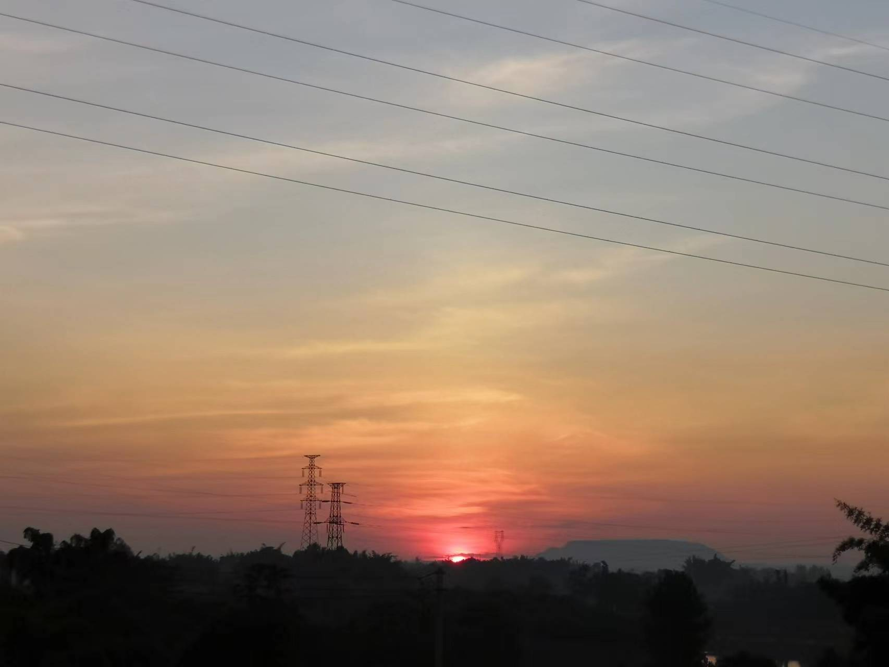
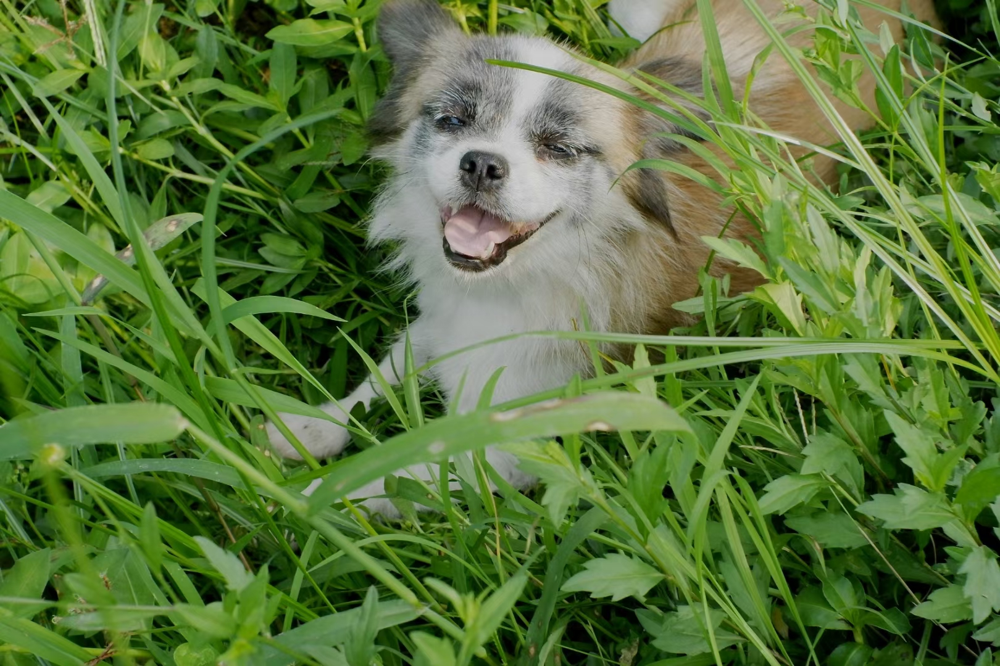
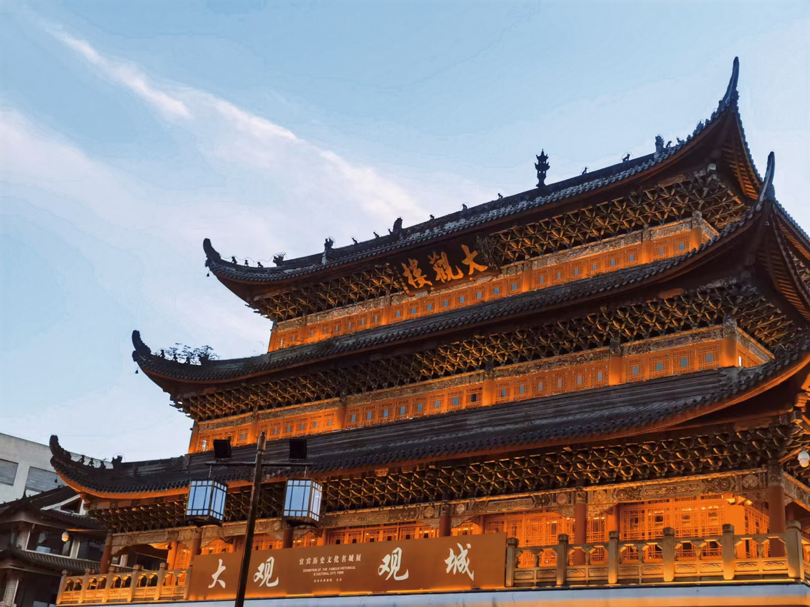
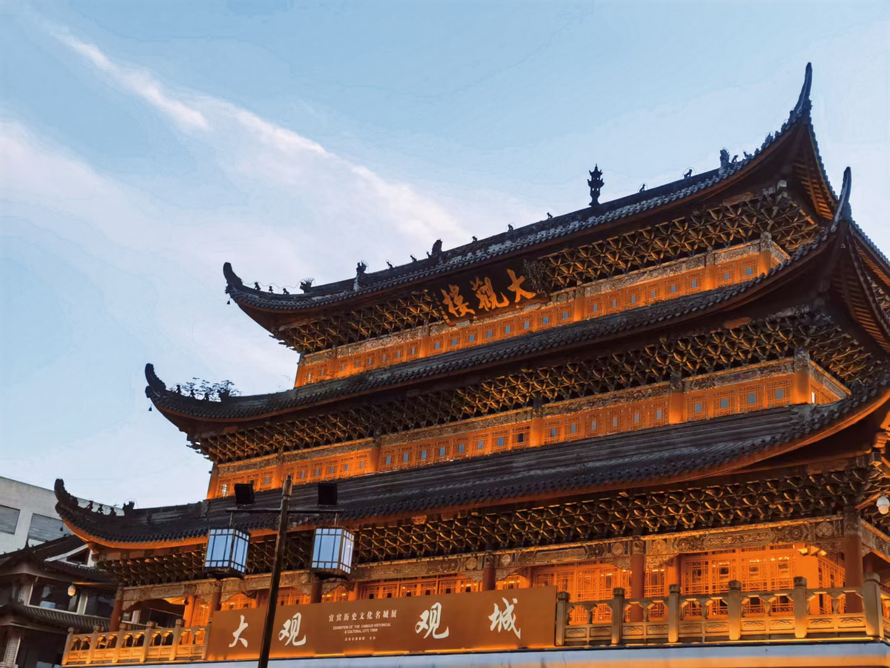

| 姓名 | 黄双 |
| 性别 | 女 |
| 班级 | 计科205 |
| 联系方式 | QQ：2390918168 |
| 头像 |  |
| 基本简介 | 我是来自四川省宜宾市江安县的一个小村落，村落叫金家滩村，哈哈听村落名称会不会以为我的乡村有很多金子，事实确实是这样的哟，不是说绿水青山就是金山银山吗，我生活的农村就拥有这样的美景，欢迎伙伴们来我家做客，我们那儿的人都很热情的哟。  |
| 爱好 | 我的爱好挺多的哈哈哈，我喜欢打羽毛球，跑步，跳绳，爬爬山，听歌以及美食，这些会让平淡的生活增添许多色彩，我喜欢在有压力的时候跑步听歌，也可以约上好友打打羽毛球或者去爬爬山并爬到山顶，这些方式都很解压，并且身心都会得到释放，有压力的小伙伴可以尝试尝试哟，吃美食会让人变得开心，会让心情很愉悦。无聊的时候可以抬头望望天空，会有收获的哟。不过我打羽毛球比较菜，如果有喜欢打羽毛球的我们可以一起约着玩。
|
 
